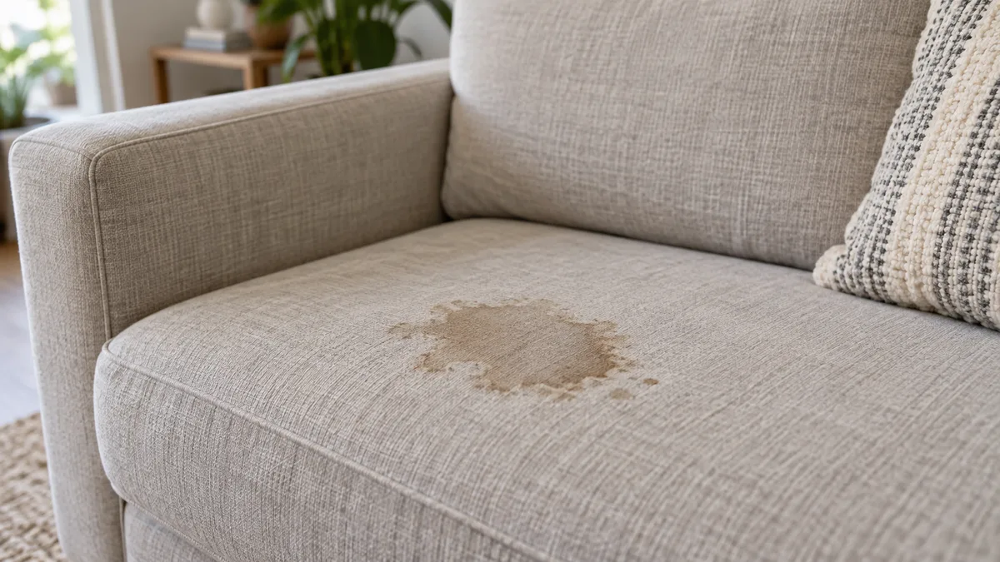
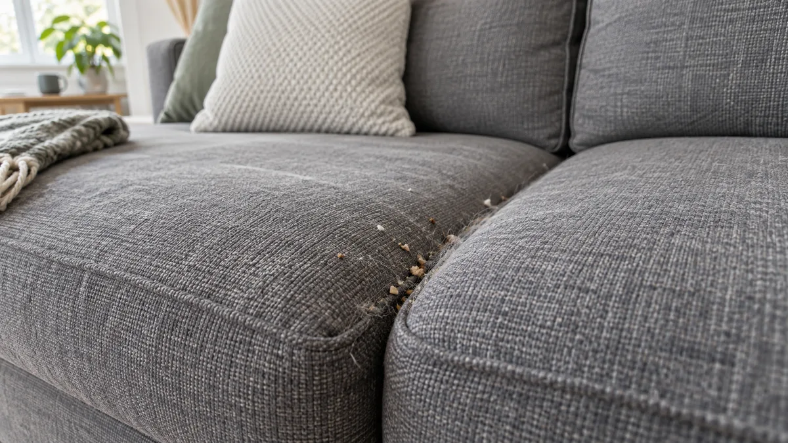
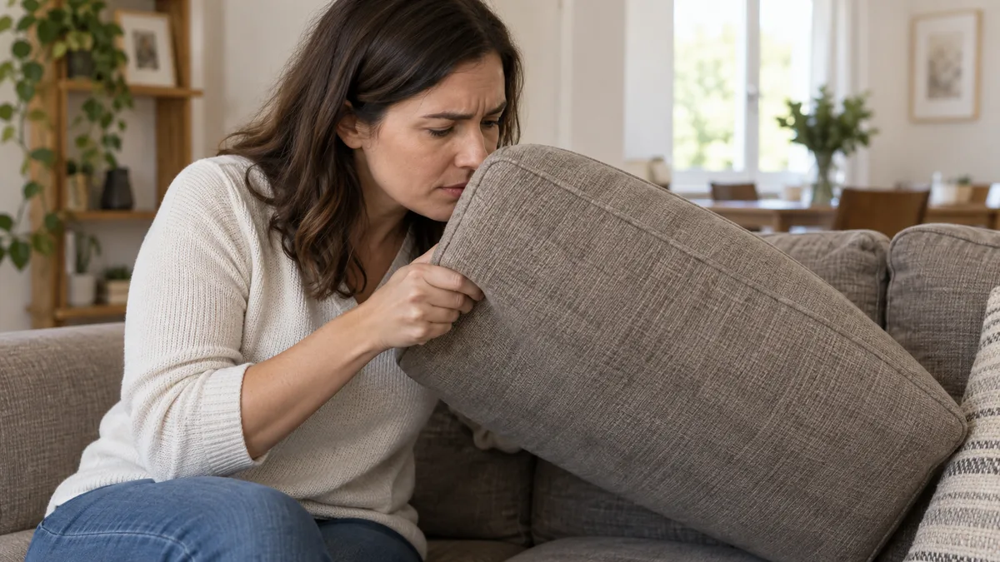
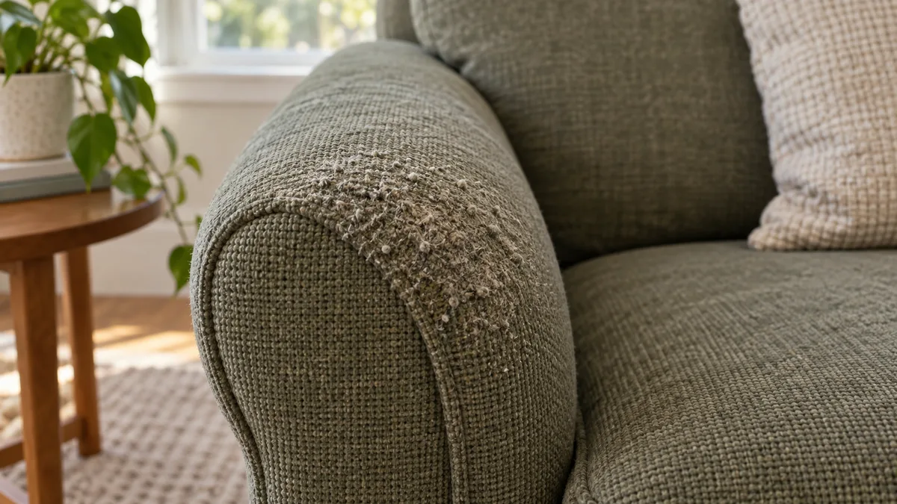

01 / 04
Manchas difíceis no sofá
Café, vinho ou gordura? Avaliamos o tecido, a antiguidade da mancha e os produtos já usados para escolher o tratamento. As limitações são explicadas antes de começar.
PILOTO VISUAL · SOFÁS
Imagens ilustrativas.

Café, vinho ou gordura? Avaliamos o tecido, a antiguidade da mancha e os produtos já usados para escolher o tratamento. As limitações são explicadas antes de começar.

O pó e os resíduos também se acumulam no estofo. A limpeza trata essa sujidade; anti-ácaros e desbacterização são cuidados opcionais, orçamentados separadamente.

Animais, humidade ou uso diário podem deixar odores no sofá. Avaliamos a origem e a profundidade antes de recomendar o tratamento, sem garantir a eliminação de todos os cheiros.

Distinguimos sujidade de alterações permanentes do tecido. A limpeza não repara fibras gastas; podemos avaliar a proteção opcional de tecidos compatíveis para cuidados futuros.